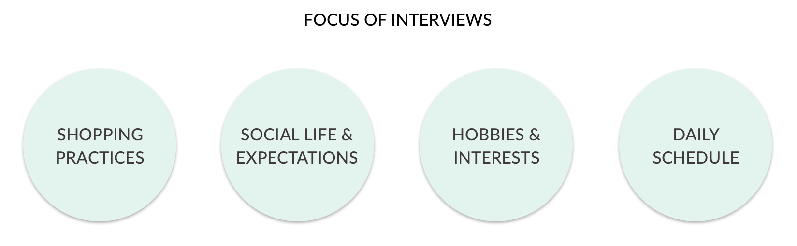
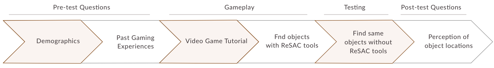

Hi, I am Tanuja. I am currently studying Human Computer Interaction at Georgia Tech.
I graduated with double majors in Computer Science and Physics from BITS Pilani, India.
Before joining Georgia Tech, I worked as a Design Intern for Microsoft Research and Telecom ParisTech.
I care about accessibility.
I like learning new skills and improving on previous ones. I love anything HCI and design. Scroll down to see my portfolio.
An AI driven planner that assists stay-at-home parents to find time for hobbies
Stay-at-home parents have little time for themselves as they juggle household chores and parenting. After conducting user research, we identified time management and task scheduling as major pain points in the routines of stay-at-home parents. The project outcome was Smart Scheduler - an intelligent solution helping stay-at-home parents stay on top of their schedules and find time for their hobbies.
To enable stay-at-home parents engage in self-care and manage time effectively.

ROLE
UX Designer
UX Researcher
TEAM
Tanuja Sawant
Rishma Mendhekar
James McDowell
Shubhangi Gupta
DURATION
4 Months
Aug 2018 - Dec 2018
TOOLS
Pen & Paper
Sketch
Adobe XD
We performed Task Analysis, Literature Review, Competitive Analysis, and Interviews to learn more about our users. Interviews and Affinity Mapping proved the most resourceful during our information gathering phase.
We conducted semi-structured interviews with 11 stay-at-home parents which helped us to identify patterns and trends among stay-at-home parents and the challenges that they face.
In order to make sense of the significant amount of qualitative data that we rapidly collected through interviews, we choose to create an affinity map. Through this, we identified 6 user needs for stay-at-home parents:

After analysing our data, we walked the wall and brainstormed 33 design ideas.
From our interviews, we made two personas to keep us focused while creating our designs.

Based on urgency of needs and feasibility of design ideas, we chose 3 ideas to explore in greater depth.

SMART SCHEDULER
Addressed Pain Point: Daily Scheduling
Wall mountable screen that enables stay at home parents to keep track of their schedule and engage in self-care activities. Replaces calendars & schedulers.
KINDLY APP
Addressed Pain Point: Child Care
Mobile app that helps parents to find kid-friendly locations and activities based on user ratings.
HOME HELPER
Addressed Pain Point: Chore Delegation
A magnetic board game that can be hung on a wall. Family members advance in the game by doing chores, thus helping the stay at home parent with household work.
Using the storyboards and wireframes we developed for each design alternative, we conducted a second round of semi-structured interviews with 3 stay-at-home parents to determine which concept fulfilled the most urgent need in their lives and how they would change each design. The results were unanimous — every stay-at-home parent preferred the Smart Scheduler.


Feel free to interact with the final prototype:
We conducted moderated usability testing by giving 6 participants tasks that represented the core functionality of the system. We asked the participants to think aloud as they went through the prototype.

Overall feedback was positive.
SYSTEM USABILITY SCALE
Average score: 83.8%
DESIRABILITY TESTING
Top 3 words

It was interesting to learn that ease of use and scheduling drew participants more to the design, rather than the self-care graphs, which were the primary functionality.
I learned to deal with circumstances in an effective manner without compromising the quality of designs or evaluations. For example, we designed a prototype on a digital platform to share it with our remote participants, and a paper prototype for our in-person study participants.
I learnt a lot from my team members - we had long and insightful conversations about UX, Tech Industry, and other arbitrary topics.
What will the experience of performing Improv Theatre in Virtual Reality be like? How will that experience change if the VR user performs with an Artificial Intelligence Agent on the VR stage?
Improvisational theatre, often called Improv, is the form of theatre in which the performance is unplanned and unscripted. Performers of the Improv Theatre often play the props game - where you use abstract objects and mime comedic actions with them pretending them to be real-world objects. My project, titled 'The Robot Improv VR Circus' (RIC), is a VR installation in which the VR user (who wears the headset) plays the props game with a partner on stage. While the VR user is impersonated as a robot, the partner is an AI agent impersonated as a robot as well. Each performer mimes actions on a turn-by turn basis. Every performer's actions are dependent on, and are a reaction to what their partner just performed during their latest turn. The research intent is to observe how the AI agent’s actions affect the VR user’s experience.
My Role: I'm currently the UX Lead for this project at the
Expressive Machinery Lab at Georgia Tech.
My role for in the Team is to make the VR experience user friendly, understandable,
and engaging. I'm responsible for UX Design, UX Research, and software development in Unity.
Team: Tanuja Sawant, Mikhail Jacob, Brian Magerko, Lauren Douglas, Michelle Ni, Ziming He, Jason Lee, Prabhav Chawla, Meha Kumar
Period: August 2018 - Present
Skills Used: UX and Game Design, Interviews, Brainstorming, User Feedback, Software Development

We seek to answer 5 questions about the Robot Improv VR Circus
Since the time I joined this project in August, I explored various ways - text, audio, video, pictures, and their combinations to convey the action that the agent is miming with the prop. After brainstorming, I narrowed down to 3 design alternatives. I conducted usability tests with 6 participants to find which design alternative the users prefer.


To engage participants during the VR experience, I decided to gamify the interaction. While conducting exploratory research, I talked to 4 experts to identify an apt gamification strategy that would indulge the users. We finalized on the idea of the VR user hitting a VR buzzer after miming each action to maximize the number of mimed actions. Additionally, I improved the Audience user interface to make the UI understandable for outsiders watching the show on a screen.

User feedback sessions aimed to confirm if I was proceeding on the right track with my designs. After some design iterations, I set out to develop the VR space for HTC Vive. I'm currently using Unity and am finishing off the Build phase as I implement Animations using Inverse Kinematics.
Along with the game development, I started to plan for the usability studies as they require precise planning and preparation. I wrote made survey questionnaires, created interview and data collection scripts, and conducted pilot studies to prepare for the usability tests. Additionally, my team and I also planned to conduct MTurk studies for massive data collection.
I learned the User Centered Design methodology followed in Georgia Tech's HCI labs. Apart from UX Research and Design, I am also a software developer for this project. I wear multiple hats and have learned to think from each hat wearer's perspective. I was guided by an amazing mentor, who taught me a great deal about computational creativity and software. More importantly, my mentor's humility, patience and kindness has inspired me to lead projects like he does.
An interaction toolkit that enables all video games to be accessible by default.
For all video games to be accessible, the tools for game design and game play need to have built-in support for accessibility. In this work, we designed, developed, and tested a novel accessibility framework for Role-Playing Video Games using 3D Spatial Audio Technology. We built a Skyrim-like adventure game to demonstrate ReSAC tools. See above video for the demo.

ROLE
Game Designer
Game Developer
UX Researcher
TEAM
Tanuja Sawant
Dr. Manohar Swaminathan
Sujeath Pareddy
DURATION
5 Months
Jan 2018 - Jun 2018
TOOLS
HoloLens
Unity
Pen & Paper
Audacity
I studied 30 research articles to understand and gain insights about the latest spatial audio interfaces developed. I also read blogs, websites, and news articles throughout my internship period to stay upto date with latest trends.
Spatial Audio can be defined as a 3D audio experience created using headphones. ReSAC, Responsive Spatial Audio Cloud is a technology for intuitively describing the world in audio form to a person with vision impairment.
Generalization of audio description for video games
Selected object that serves as an anchor to help in orientation
Unique tone always played from the North direction
Spatialized audio description of objects in field of view
Spatialized audio beep that acts as a guide to reach objects
Spatialized sonification of bumps, fluctuations in ambient sounds, player's footsteps, etc.

The player gets spatialized audio playout of objects in view. The viewing angle and depth of the perceived field of view are adjustable.
A siren modulated in volume and pitch guides the gamer to reach the objects.


Viewdios are zones that convey crisp summary of scenes. A siren of varying pitch helps the player orient to face the scene.
I obtained quick feedback from office employees by conducting Think Alouds with the Skyrim-like adventure game. Realising that the Skyrim-like adventure game is too complex for testing a subset of ReSAC tools, we decided to build simple video games for initial testing. I learnt that too many tools with a lot of flexibility increase the cognitive load of the player. Hence we decided to incorporate constraints and test tools in chunks.
I built a much simpler first-person 3D video game for conducting preliminary user studies. The game environment is a room of size 84x36 sq. ft which has typical workplace objects.

Top View of the Game Room
I conducted usability testing with 6 people with vision impairments. I received positive feedback - all participants were able to use the interaction tools successfully.
"I don’t play (PC/mobile) games because I have a prejudice that games are largely inaccessible. But this game has changed my perception."
"I could feel myself inside the room. I heard the voice exactly from the objects’ location, so it helped me to know where I should move and take turns. I am imagining, and I am playing."
I learnt a lot from my team during ideation and debugging phases. I developed an increased sense of passion for accessible design. I was able to volunteer for two other projects while at Microsoft Research - which broadened my understanding of Emerging Markets. I was guided by amazing mentors, who taught me a great deal about Assistive Technology, as well as debugging Unity applications. I learnt to respect deadlines, even if it means pulling all-nighters or staying at the office overnight.
This page is a work in progress. Please contact me if you'd like to know more about this project.
This page is a work in progress. Please contact me if you'd like to know more about this project
The Drawing Robot was my final project for the class "Gadgets, Sensors and Activity Recognition. It draws out different shapes and patterns that the computer feeds in it. The robot has been fabricated and programmed completely by me as a part of the course.

The project prompt for the class was to make a fully functional gadget, that does something 'cool'. I decided to make the Drawing Robot because I wanted to practice my fabrication as well as programming skills, while building something useful. Coming from a Design background, and gaining experience in computer science, mechanizing art has always fascinated me. I wanted to make something that can draw using any medium on any flat surface. So, I had the idea of making a robot that moves on a surface on wheels and draws.
The robot consists of two main segments, the body and the circuit. The body consists of wheels that the robot moves on, a chassis that mounts the circuit, holders for batteries, and a holder for the ball-bearing. Additionally, it consists of a level that helps lift and drop the drawing pen. The body has been fully fabricated using my personal 3D printer, that I built as a part of the class "Advanced Fabrication Techniques". The body has been put together using machine screws and glue guns.
The hardware consists of two motors that are attached to the wheels. There is an additional mini-Servo motor attached to the level that helps lift and drop the pen. Additionally there is a ball bearing on the bottom that makes the robot's motion smooth as well as help balance the weight. There are 4 AA batteries on the bottom that power the robot.
The bot has been programmed to move on a certain path. This path is the shape of the required drawing. In between the robot body is a drawing pen that the lever picks and drops to draw at different locations.
The project was presented in class and received appreciation. In the second module, I used a Japanese Brush Pen to draw, and changed the lever level to alter pen pressure. This created a calligraphic effect to the drawing with varying width. As an extension of this project, I am teaching the robot to draw with sand.
This is a full schematic of the robot circuit. Download source code.

Savour is a food discovery and comprehension mobile application, designed as a part of our 5th semester’s Interaction Design course’s project. The course involved us carrying out every step in the design process of a product up to making low fidelity mock-ups. The interaction process involved user research, need-finding, interviews, personas, scenarios, card sorting, information architecture, prototyping, wireframing, visual design and usability evaluation.


As a part of our course, Interaction Design, we wanted to explore the domain of food and travel, and come up with a service that makes the food experience while traveling easier. We started by identifying the problem space, the stakeholders involved, and the needs of the stakeholders. We identified that a food exploration does not just influence the explorer, but a variety of stakeholders like local people, businesses, hotel owners, and other travelers. We made a map that categorizes these stakeholders in potential ‘Users’, ‘Affected’, and ‘Influential’ for our service.
We further went on to draw an empathy map of the user, which involved understanding what each stakeholder thought, saw, said, did and heard about the domain, which was food in a new location here. We also identified the activities that these users carry out in a particular environment and the objects these interactions include. We further explored what pains and gains these interactions involved.


We further made personas of the target users for our service. We observed travelers find food and interviewed them. After conducting 8 contextual inquiries, we synthesized our data into key findings, and break points in interactions. This initial exploration gave us a good idea of who the user is and what some of the pain points in food exploration were. For example, we learned that language is a huge barrier in finding food, people rely on other travelers’ reviews, and that people unknowingly settle for dishes similar to the dishes they have had before. Through competitive analysis we realized how digital applications in the market lack personalization, and there lies an opportunity for us to add that as a feature in our service. We also realized that drawing parallels from food items makes people identify food items quicker and better.

User Persona

Interviews

Research Synthesis
Post our research synthesis, we identified gaps in food discovery in a new area - language, mobility, comfort; and opportunity in the domain - personalization, drawing parallels from food the travelers have had before, user control and language compatibility. One thing we learned from our user interviews was that travelers dislike carrying an additional device while they move around, which made us want to use a device that already exists in their environment - their mobile phone. We translated what we learned from our research synthesis to product features, such as - translation of menu cards, listing ingredients in food, personalized profile page with details about preferences and allergy, using OCR and translating menu card descriptions on photographs, and correlating food descriptions to previously consumed food.
We used Balsamiq mock-up to quickly low fidelity prototype our ideas. We then tested these ideas with users, by asking them to think aloud while using these wireframes to do pre-defined tasks. One challenge we faced was to define user tasks, since this was an exploration service. Hence we left some space in the task descriptions for the users to explore and make decisions.


Styling the application involved several visual design decisions. We wanted the typography to be friendly and casual, reflecting the exploratory nature of our target audience. We also chose a color palette that resembled the colors of spice - black, red, yellow, and green. This color palette also gave us sufficient contrast and variety to work with. We tried several logo concepts that combine the idea of travel and food, that included the use of cutlery and crockery, and the use of pins or locators. After several iterations we narrows down on an icon that symbolized food equipment, and also hides a locator icon within it. For the product itself, we used the iOS 7 guidelines and the color scheme that we had established for the application.

I worked at the Asad Firdos Design Studio to design and assemble a furniture product. The product developed was an egg chair. The project involved product conceptualisation, prototyping, ergonomics, manufacturing techniques, moulding and casting processes, jointing, cushioning, painting and finishing.


The concept behind the chair is the egg shell cavity. I wanted to develop a sitting place in which you can get cozy into your own private shell, this ignited the idea of something exactly similar that nature has given us, an egg shell. What attracted me was the unique way in which an egg cracks open. Also, sitting in an egg always fascinated me.
I built a scaled down prototype of the model was developed with wires and paper coating. Dimensions were decided after a study of human body dimensions. Principles of ergonomics played a huge role in product details and ratio. The prototype served as a blueprint for the final product design.


For making a clay structure, an initial metal frame was welded. The frame was then wrapped in ropes to hold the clay. The jute roped were woven with synthetic fiber ropes.
The round shaper of the egg was made in clay with an inner metal and rope framework. To make the mold of the final egg, plaster of paris was coated on the clay. The PoP was separated by metal plates for easy separation from the clay as it dried. Different parts of the PoP were numbered and pulled out to have a set of mold pieces.


Casting in moulds: Glass fibre re-enforced plastic was used for casting. The PoP moulds were used for structure.

Jointing and Cushioning

Final Product after finishing
This project taught me to take risks. It was a time and stamina intensive project and I ventured into a domain I had no expertise in. I learned from the artists, carpenters and fabric designers around me. I got comfortable working in a workshop. Seeing the chair evolve from a concept to a product and being used was a joyful experience.
This information visualization project was carried out as a part of the elective course, Information Visualization. I designed graphics to visualise the sex ratio of urban and rural India over the years. I further made an Illustrator script to visualize a similar data from every state in the country.
Decades of sex determination tests and female foeticide that has acquired genocide proportions are finally catching up with states in India. The decline in child sex ratio in India is evident by comparing the census figures. In 1991, the figure was 947 girls to 1000 boys. Ten years later it had fallen to 927 girls for 1000 boys. This is alarming. More than we realize. An imbalance in gender ration, can lead to severe repercussions for the society. Moreover, these figures depict a discriminatory history against females, that I felt compelled to bring to light. As a part of my elective course, Information Visualization, I chose to pick a socially relevant topic, and best use visualization to bring to light the gender divide of the country.

The course taught me several information visualization techniques and which ones work well for specific kinds of data. I decided to chose a dataset with multiple dimensions, in order to learn multi-level data visualization. The data set included gender rations (number of female citizens for every 1000 male citizens) in urban and rural areas from 2005 to 2011. There was no data for the number of trans-gender citizens.
I iterated on several layouts to visualize this data. We went through several rounds of critique in the class and made improvements and increments in the iterations. Some initial iterations can be seen here:

I finally settled on a circular layout owing to the multi-level data. I wanted to depict the 'gap' which is why I used a 'part of a whole' technique, where the number of female citizens are shown as a part of the full circle of '1000' male citizens. The colors were used to show a gradient of alarm, while pointing out extremes. I also used a contrasting green for rare anomalies for data that stands out. For example, the state of Chhatisgarh has a gender ration higher than 1000. I used visual outlines of gender symbols and states for visual depiction of the concept.
I have, also further worked on creating custom illustrator scripts (only compatible with CS6) for visualizing data from any state. Contact me for access to the script.

I have been actively teaching myself motion design, and animation using Framer.js, and Adobe After Effects. I have explored stop motion animation, motion graphics, and kinetic typography. These are some of my work samples.
MorphBounce animation from Safinah Ali on Vimeo.
Star Wars Kinetic Typography from Safinah Ali on Vimeo.
Play-Pause transition from Safinah Ali on Vimeo.
ATM simulator from Safinah Ali on Vimeo.
I am a visual design enthusiast, and have been practicing visual communication for four years. I have worked with event branding, social initiatives, freelance projects, and personal projects.


Spark is a monthly magazine by Qureeus Eduventures that brings puzzles, thought experiments, articles, activities, math-athons and games to high school children. My responsibility included completely designing the layout and visual elements of the newsletter. I also co-created the content of the magazine, and developed strategies for best presenting the content to keep make it an enjoyable learning experience.
Vineesh Kumar (founder, business, distribution), Vishesh Kumar (content strategist), Safinah Ali (visual designer)
Spark was made with an intention of making learning fun. The idea was to include puzzles, games and brainteasers for high school children. We wished to include math and logic concepts, and teach strategy through solving these. The magazine was distributed in schools in New Delhi as a non-coursework monthly newsletter.
I was approached by the founder for Qureeus Eduventures to assist them in desiging the monthly newsletter. I worked with the team for creating content, finding/making puzzles and suggesting best ways to present these.
I worked with several iterations of layout design for the magazine. I started benchmarking with other magazines in the market (Highlight, Disney, Nat-Geo, Kids, Twinkle Star) and listed what works for them and what does not. I had the privilege of interviewing an avid high school magazine reader, and run my layouts by them. I conducted a think-aloud session with them for each iteration of the layout and made changes in the next iteration.

Early Iterations of Layout Design
I worked in a small team of 3, and learned to put on multiple hats. I helped with content as well as distribution, which were new domains for me. I learned techniques and practices of print design. I learned a great deal about learning and games through my team.
Two editions of Spark have been distributed in schools in New Delhi and received a positive feedback. We are in the process of creating an e-magazine and online subscription process for further editions.
For the last 8 months, I have been experimenting with computational design to become a better programmer. I did several independent projects where I used different programming environments to create some form of interactive art. I made a game, a twitterbot, map visualizations, a TSNE grid of visuals, a star-gazing application and a couple of drawing software.
Know your emoji - game video from Safinah Ali on Vimeo.
Know Your Emoji is a text based infinite runner obstacle game. The player avatar has to jump obstacles to collect points. These obstacles are randomly selected emoji from an emoji library of 850 icons. To be able to jump, the player enters the name of the emoji. If the emoji is correctly identified, the text returned results in jumping, if not, the player collides with the obstacle and dies. With this game I wished to explore the different perceptions of visual emoji.
I play-tested and refined game mechanics like speed, gravity in jumping and distances to make it smooth. It was interesting to see how some players thought of some icons as very different from what their tag actually was. One player also commented not the vast variety there is in emoji that they hadn’t noticed before. I used the Phaser js game library. A future iteration could involve allowing players to make custom paths and draw picture stories, and having other players play with these paths.
Source code


Growing album is a video of 11k album covers growing in saturation and complexity. The idea is to show a ‘growth pattern’ of sorts in album cover design. I gained access to a beautiful data set of 1 million audio record covers. I first cleaned the image-set to remove all he junk images. Then I used ofxTSNE algorithm by Gene Kogan to make a grid of these covers sorting the visually similar images. I did multiple small grids with sets of images from the big image-set. This is the TSNE grid I got from all the images.
I recognized several visual patterns in these album cover designs. There were shape patterns like circular disks. Several album covers had a group of people, most commonly the band members, sometimes the crowd. Some audio album covers had a single person with a guitar or another musical instrument. A group of images were just very intricate designs or ornate patterns. It was interesting to observe the change in lighting in different album covers.
I used average pixel color variation from the median color of the image, and used this standard deviation measure to determine the more complex images vs the less complex. Another sorting I did was based on the image saturation. This was interesting because I saw a pattern in genres when I did the saturation sorting. A lot of classical music and jazz appeared in the less saturated images. A lot of Jazz also appeared in the night images. A lot of international music, like Indian or Japanese music appeared in the most saturated brackets. I then arranged these images in a video and associated the Shepard sound note to them, to produce a progressive music effect, to show an increase. I want to, in the future run an image search on these albums, figure out their timespan and genre, and find patterns in these. This is an interesting image set that I continue to play with.
Source code

I took a meteorite strike dataset and wanted to visualize it on a map. The data was especially intriguing to me, since meteorite strikes are not something we actively thing about. I wanted to portray through a visualization that it actually happens, and the impact could be major. For my first visualization I used a simple visualization of strike locations on a map. I used Leaflet-js plug-in to implement this. I especially made use of Ingrid’s workshop on map visualization. I used the watercolor map tiles by Stamen Design.
The visualizations places all the meteorite strikes at their location on the map. In addition to that, one can click on each of the points to see the place of the name of the strike.
Source code

Paper planes is a Twitter bot that tells the story of paper planes migrating to the moon. The bot generates an image of randomly placed paper planes flying east. These images have a narrative attached to them as these planes fly out. The narratives are witty and short, like: “Flying looks good today”, or “We’re going to the moon. OkBye.”. The bot then posts these to Twitter after regular intervals of time. I used Node.js to implement this bot. I learnt making this bot from Daniel Shiffman’s wonderful video tutorials, and the Twit-js library by Ttezel.
Source code

Constellations is an interactive application that lets you join stars and create constellations. My fascination with stargazing made me want to attempt an application with the Star Map. In an attempt to build something interactive, I made twinkling stars that can be joined with simple finger gestures to create constellations. When left idle the map automatically generates constellations.
I used Processing 3.0 for making this app. I used multiple sources and sample projects to learn how they use the sky map locations (in the references). I took a lot of inspiration from Kazuyuki Motoyama’s work. I added the dimension of star locations and in-between distances for the auto mode.
The main challenge in making this was using an actual Star Map. The interactive part in itself was easy for me, because a lot of people have made similar applications.
Source code

Have you seen digital artists draw on their computers? They have one hand on their mouse, the other stretched between their keyboard and their pen-tablet. What if we use one tool that needs just one-handed use to perform all the different functions artists perform with their two and half hands? So, I set out to make a tool that helps a digital artist draw, while changing the various properties of the drawing live while drawing.
I used Spacenavigator 3D mouse with a bunch of 3D CAD software to explore its functionality. The space navigator has been primarily used for 3D navigation in rendering tools. I wanted to utilize the mouse to draw uniquely. I utilized all the degrees of freedom of the mouse to perform different functions during drawing to enhance 2D drawing. I used OpenFrameworks to create a drawing program that draws in 3D, rotates, changes the stroke width and changes the color, while it draws.
Video of the drawing program in use.
Source code

Maze letter is a program that draws mazes of alphabets that a person enters. I made maze drawings for the English alphabets and used to them to draw a connected maze. The alphabets connect to form one big horizontal maze.
Source code

Schlotzsky’s is a sandwich franchise founded in Austin, Texas. Schlotzsky’s is taking a proactive approach to implement accessible design throughout the company’s websites to grow their user base and comply with the Americans with Disabilities Act Title III.
Redesign Schlotzsky’s online ordering platform to make it usable and accessible according to WCAG 2.1 Accessibility Guidelines.
Our target users are people interested in ordering food for pickup from Schlotzsky's online website
ROLE
UX Researcher
UX Designer
TEAM
Tanuja Sawant
Rishma Mendhekar
James McDowell
Shubhangi Gupta
DURATION
4 Months
Aug 2018 - Dec 2018
TOOLS
Pen & Paper
Sketch
React.js
In order to identify pain points that the website’s users face, we conducted 4 research methods - Task Analysis, Cognitive Walkthrough, Interviews and Think Alouds, and Tree Testing.
We conducted task analysis to understand users’ goals and possible task flows while ordering on the Schlotzsky’s website. This allowed us to spot navigational issues and understand the process at a granular level.

We conducted cognitive walkthrough to understand the customer’s expectations and information needs on the website. We formulated online ordering tasks and answered the following questions for each step in the process:

We conducted think aloud sessions with 13 participants representative of our target user group. These sessions helped us to understand the website’s strengths and weaknesses from the perspective of a consumer.

After conducting think aloud sessions, we performed affinity mapping to obtain a set of broad problems we should cater to.


To collect quantitative data about the website’s information architecture, we conducted Tree Testing with 68 participants. Tree Testing helped us to understand what portion of users could find what they were looking for, and if the navigation labelling was appropriate.
Task: You live in the city of Atlanta, Georgia. You have to order a Fresh Veggie Sandwich from a restaurant called Schlotzsky's.

After synthesizing our data from all the conducted research methods, we identified the following common pain points.


We brainstormed possible design solutions to the online ordering platform, making sure that we didn’t restrict ourselves to just a website.
We narrowed down to 3 design alternatives based on their feasibility and usability.

VOICE ASSISTANT
Converse with a smart voice interface to order food online. We shortlisted this idea as it allows natural interactions and aids accessibility.
CHATBOT
Chatbot that uses text as a medium of communication. Chatbots have great potential of being accessible interfaces with screenreaders.
WEBSITE
We designed and developed a website according to the web accessibility standards. A streamlined website is a familiar and usable alternative.


Drivers, especially learners have a difficult time communicating with each other on the road, which hinders their driving ability and affects their mental state. New drivers are especially stressed out by negative feedback from other drivers. MIDA is an IoT based Intelligent Driving Assistant that provides learners with constructive feedback, with the benefit of decreasing stress and increasing freedom.

In order to understand challenges faces by drivers, particularly learners, we conducted an initial research. We used interviews, surveys, read literature on road rage, and reviewed statistics on road accidents. We focused on parking, external distractions safety, struggles that learners face internal distractions, speeding, and feedback for drivers. We found out a bunch of pain-points including parking troubles, difficulty in communication, confusing signage, and a lack of feedback. We decided to focus on communication breakdown between drivers, and stress inducing feedback experience by novice drivers.


Based on our research, we storyboarded some initial service concepts. These included:

We Speed dated these concepts with potential users by asking them to go through the service scenario, and think aloud what would work, or what wouldn't work for them. Based on the feedback we received, we creating 4 new service scenarios focusing on inter-car and automated feedback, as well as creating empathy for other drivers. We enacted some of these scenarios with potential users by using toy cars, and asked them to think aloud about their experience and decisions throughout the activity. We received a mixed feedback, where people were happy about in-car communication, but found positive driving feedback to be patronizing. This feedback helped up narrow down on one solution.
We created a built in an Intelligent Driving Assistant (MIDA), that provides learners with constructive feedback, to supplement driving teachers and parents with the benefit of decreasing stress and increasing freedom. This is a valuable business case because driving schools can use MIDA to teach new drivers, DMV can use MIDA to assess driving ability, it encourages better driving habit, and fewer accidents. Hence, we re-positioned our stakeholder model, due to the addition of the new service MIDA.


Re-imagined customer experience journey